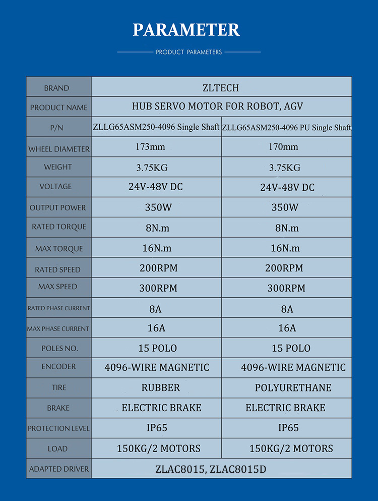

Hardware Uses
STM32
Hub Motor and Driver
Firmware-Team is using ZLTECH’s hub motor and driver provided by Aj.Pi for both wheels.
Type |
Product Name |
|---|---|
Hub Motor |
ZLLG65ASM250-4096 V2.0 |
Driver |
ZLAC706-CAN |
ZLLG65ASM250-4096 V2.0 is a ZLTECH’s servo hub motor with an built-in encoder specially designed for mobile robot application and also powered by 24-48 VDC. Here is some specification of this hub motor
ZLAC706-CAN is a ZLTECH’s servo driver with CAN communication protocol